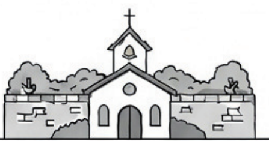

About Church
교회 소개
오직 성경을 통해 오직 하나님께 영광을 드리는 교회, 담장너머교회를 소개합니다.

Who We Are
담장너머 교회는
이런 교회입니다
개척 교회
아무 것도 없지만 모든 것 되신 하나님을 믿습니다.
개혁 교회
역사적 개혁주의를 엄밀한 의미에서 따라갑니다.
장로 교회
장로회 정치를 가장 성경적인 제도로 받아들입니다.
지역 교회
지금은 여기저기 흩어져 있지만 장차 지역 속에서 복음으로 섬기는 교회를 꿈꾸고 있습니다.
Pastor's Greeting
담임목사 인사
평안하신가요? 임승민 목사입니다.
사람들은 행복에 목말라 하고 즐거움을 갈망합니다. 갈망 자체는 문제가 아니지만, 그 갈망을 무엇으로 채우느냐는 큰 문제입니다. 하나님을 잃어버린 사람은 그 어떤 걸로도 목마름을 채울 수 없기 때문입니다.
그렇다면 어떻게 이 목마름을 채울 수 있을까요?
어떻게 참된 즐거움을 누릴 수 있을까요?
오직 예수, 오직 은혜, 오직 믿음 밖에는 없습니다. 담장너머 교회는 종교개혁의 정신을 따라 거짓 쾌락을 선전하는 짝퉁 하나님이 활개 치는 이 시대에 참된 교회를 세우고자 몸부림치는 교회입니다.
고단하지만 즐겁고, 행복하지만 수고로운 교회 건축, 그리스도의 몸을 세우는 일에 여러분을 초대합니다.
Pastor
담임 임승민 목사
- 천안북일고등학교
- 한동대학교 경영경제학부
- 총신대학원 목회학 석사 (M.div)
- 정원교회 (교육) · 일산교회 (준전임) · 동원교회 (전임)
- 2014년 담장너머 교회 개척
교회 이름에 담긴 말씀
요셉은 무성한 가지 곧 샘 곁의 무성한 가지라창세기 49:22 — Joseph is a fruitful vine, a fruitful vine near a spring, whose branches climb over a wall.
그 가지가 담을 넘었도다
Our Vision
담장너머 교회가 추구하는 것
오직 성경
오직 성경을 통해 오직 하나님께 영광을 드리는 교회
경건한 삶
경건한 삶의 체계로 그리스도를 높이는 교회
배우고 실천함
진리의 영을 따라 힘써 배우고 실천하는 교회
하나님으로 인한 즐거움
삶의 하나님으로 인해 즐거워하는 교회
New Family
처음 오신 분께
담장너머교회에 오신 여러분을 진심으로 환영합니다.
주일예배
주일 오전 10시 40분부터 아침기도로 예배를 준비하고, 11시에 주일오전예배를 드립니다.
등록교인문답
새로 오신 분들은 4주 출석 후 등록교인문답을 공부할 수 있습니다.
함께하는 삶
예배 후에는 오후 소모임과 어린이모임으로 그 주의 설교를 함께 나누고 삶에 적용합니다.
Visit Us
오시는 길
- 주소
- 서울 서초구 서초중앙로18길 43 율전빌딩 B1
- 예배
- 주일 오전 11:00
- 소속
- 대한예수교장로회 합동 경기노회
- 문의
- 임승민 목사 · 010-3423-4684